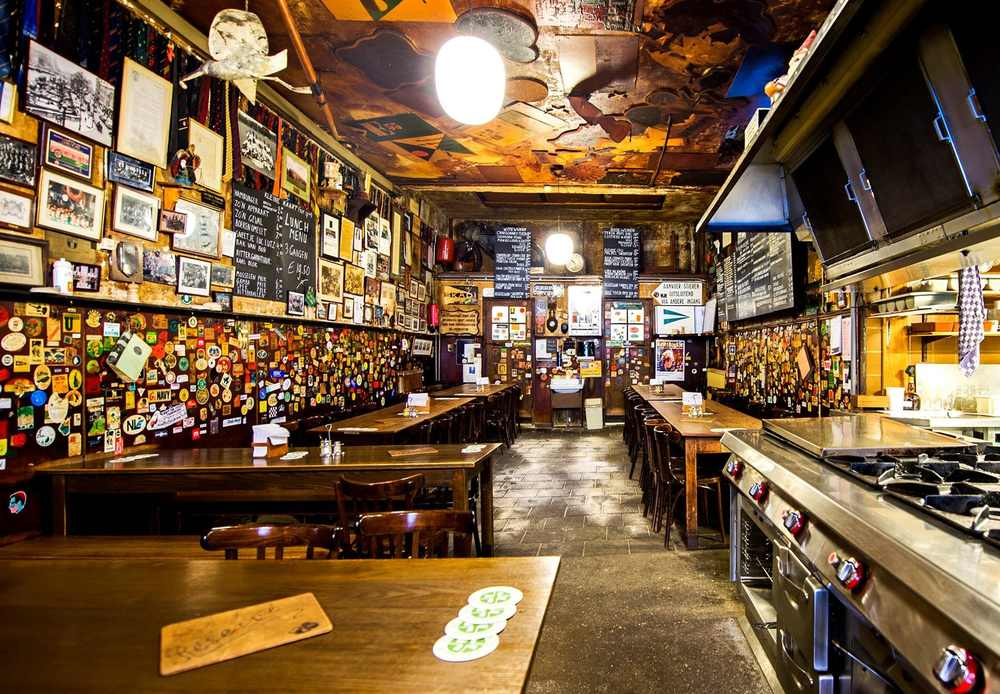
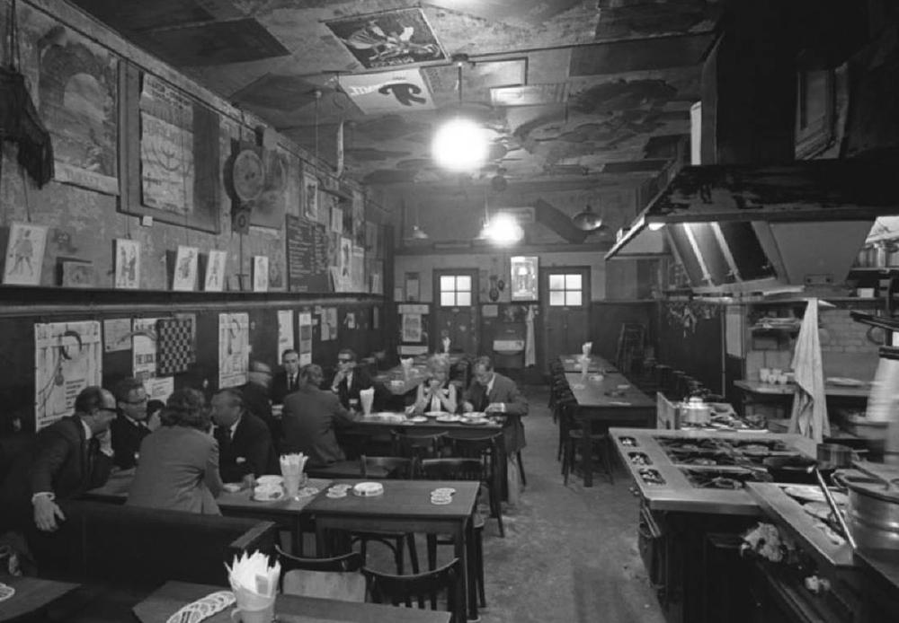
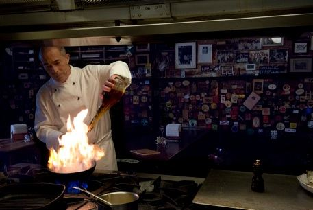
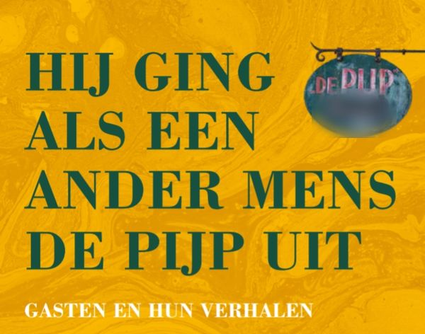
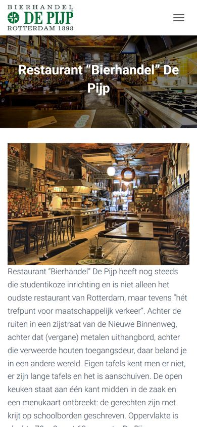
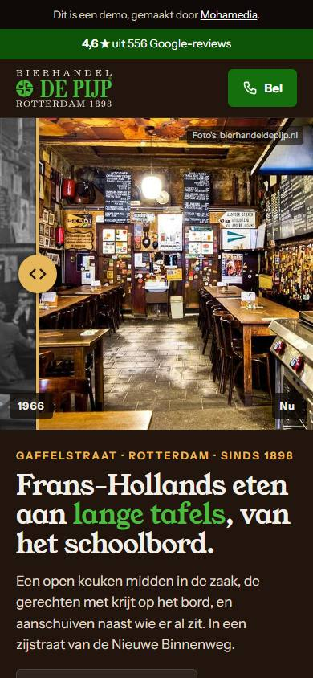

No. 1
“Het oudste restaurant van Rotterdam”
Zo noemen gasten De Pijp in hun reviews op Google. Ze schrijven over een iconische plek die ouderwets gezellig is.
4,6 ★ uit 556 Google-reviews · Reserveren: 010 436 68 96
Een open keuken midden in de zaak, de gerechten met krijt op het bord, en aanschuiven naast wie er al zit. In een zijstraat van de Nieuwe Binnenweg.
4,6 uit 556 reviews op GoogleGaffelstraat 90-A, Rotterdam


Frans-Hollandse keuken, dagelijks vers. De gerechten staan met krijt op het schoolbord, er is iedere maand een nieuw gerecht van de maand en de keuken speelt in op de seizoenen. Gerechten zoals:
Foto's van onze borden, zoals ze op onze menupagina staan (juli 2026). Wat er vandaag op het bord staat, lees je in de zaak.
Kies lunch of diner, met hoeveel je komt en welke dag. Dan staat hieronder precies wat je aan de telefoon zegt.
Lunch wo–vr 12:00–14:00 · diner ma–za vanaf 17:30 · zondag gesloten.
Zo noemen gasten De Pijp in hun reviews op Google. Ze schrijven over een iconische plek die ouderwets gezellig is.

De keuken staat midden in de zaak. Op het bord staan onder meer de kalfsribeye met brie, de Franse uiensoep, confit de canard en gestoofd rundvlees.
Eigen tafels zijn er niet: er zijn lange tafels en je schuift aan. Gasten schrijven dat het er druk en luid kan zijn. Bel dus even voor een plek.
4,6uit 556 reviews · bekijk ze op Google
Een oude bruine kroeg, heel gezellig, met uitstekend eten.
Een gezellige plek met heerlijk eten, en je voelt je welkom.
Fantastisch eten en een fantastische sfeer.
Samengevat uit reviews op Google, niet letterlijk geciteerd.
Van bierhandel tot restaurant, van de Gelderschekade naar de Gaffelstraat.
De Pijp begint als bierhandel, met distributie en bottelarij, aan de Gelderschekade.
Het eerste pand wordt verwoest bij het bombardement op Rotterdam.
“De nieuwe Pijp” gaat van start in een oude garage annex fietsenstalling aan de Gaffelstraat.
Als de sociëteit van het Rotterdamsch Studenten Corps dicht moet, doet De Pijp tijdelijk dienst als ondergrondse sociëteit; in de oorlogsjaren is het een plek waar het studentenverzet samenkomt.
Het eerste boek over De Pijp, en de grens van 1000 dassendragers gaat over: wie een genummerde Pijp-das heeft, staat in het dassenregister.
Het tweede boek, bij het 100-jarig bestaan.
Das nummer 2000 wordt bereikt.

200 pagina's met verhalen, literaire stukken, kunst en nooit eerder vertoonde foto's. Het boek is te koop in De Pijp, tijdens de openingsuren. Combineer je het met een lunch of diner, bel dan even om te reserveren.
Plan lunch of dinerTelefonisch, op 010 436 68 96. Reserveren is aanbevolen.
Met krijt op de schoolborden in de zaak. Hierboven zie je foto's van de borden zoals ze op onze menupagina staan.
Woensdag, donderdag en vrijdag van 12:00 tot 14:00.
Maandag tot en met zaterdag vanaf 17:30. Op zondag zijn we gesloten.
Eigen tafels zijn er niet: er zijn lange tafels en je schuift aan.
Ja, met Visa en Mastercard.
In een zijstraat van de Nieuwe Binnenweg.
| Maandag | diner vanaf 17:30 |
| Dinsdag | diner vanaf 17:30 |
| Woensdag | lunch 12:00–14:00 diner vanaf 17:30 |
| Donderdag | lunch 12:00–14:00 diner vanaf 17:30 |
| Vrijdag | lunch 12:00–14:00 diner vanaf 17:30 |
| Zaterdag | diner vanaf 17:30 |
| Zondag | gesloten |
Bel voor een plek aan de lange tafel, of zet eerst je bezoek klaar in de planner.


WhatsApp staat uit, omdat 010 436 68 96 een vast nummer is. Met een WhatsApp-nummer zetten we de knop aan.
© Mohamedia · demo-ontwerp, gebruik zonder betaling niet toegestaan